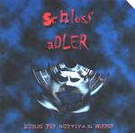

| Artist: | Schloss Adler |
| Title: | Music For Survival Horror |
| Label: | Cyclops CYCL 099 |
| Length(s): | 56 minutes |
| Year(s) of release: | 2001 |
| Month of review: | [03/2002] |
| 1) | A Trap Disguised As An Invitation | 3.35 |
| 2) | Doors And Mirrors | 3.24 |
| 3) | Apparation | 1.15 |
| 4) | Paintings | 2.13 |
| 5) | Schattenwesen | 3.39 |
| 6) | Murder | 3.59 |
| 7) | Fear Of Enclosed Spaces | 2.57 |
| 8) | A Safe Place | 3.48 |
| 9) | Dreaming Of Rain | 4.45 |
| 10) | Azazel | 3.07 |
| 11) | Strange Orchids | 2.54 |
| 12) | Glossolalia | 2.53 |
| 13) | Blood Waltz | 2.46 |
| 14) | Phantasmagoria | 3.15 |
| 15) | Invocation Of Saleos | 7.42 |
| 16) | Falling | 3.38 |
Darkness continues with the tortured sounds of Doors And Mirrors. Brooding filmic music with plenty of samples. One might be tempted to envision some the more intense darker parts of Lord Of The Rings here. Hmm. Halfway though the music turns for the friendly due to the keyboards, notwithstanding the ominous sounds in the back.
Apparation is short, but very spooky and noisy with a lone piano and mostly loud string like sounds, like a chamber orchestra of 200 tuning their violins. Paintings has synthetic female voices, melodic and almost sensuous. Again, the melodies are beautiful, romantic and majestic even.
Schattenwesen combines dark tones (making you think you are in the sewers or something) with eerie sounds of weird creatures. Somewhat industrial sounding at times and quite noisy in the end. Murder is a repetitive, somewhat hectic track with vocal samples.Later the synth strings set in for more spookiness and tension.
Fear Of Enclosed Spaces is a dark bubbly tune with effects mostly. Later we hear the sounds of what seems to be a mass fighting scene. A Safe Place is reached then. Warm and tranquil with a little bit of percussion even and a kind of jazzy undertone.
Dreaming Of Rain opens with rain of course and bird sounds. Again a rather tranquil piece, with lots of talking in between lending the song a brooding atmosphere. At times on this album, I am reminded of Eddie Jobson's Theme Of Secrets, also dark, but melodic and eerie at times.
After the dark Azazel, we come to the pleasant piano of Strange Orchids. The song even has some melodic and even somewhat romantic acoustic guitar, and speaks of longing, a bit in the way of David Sylvian.
Glossolalia is a rather powerful track with sizzling synths, but mostly percussively played piano. Wonderful. Bllod Waltz has strings again and ends in a rather weird fashion. Phantasmagoria is very eerie with also some very loud percussive sounds.
Invocation Of Saleos is by far the longest of the fifteen tracks. Almost eight minutes in length it opens with piano, in waiting. In the back someone is reciting, later in tormented fashion. Still, the music is rather still in itself, and harbours the most memorable of the melodies on this album. Again, I am reminded of Karda Estra here. The middle part is quite peaceful, but then the recitation comes in again and the music makes a turn again. The beautiful theme resonates again. We close with Falling, a sombre but also somewhat uplifting piano piece.